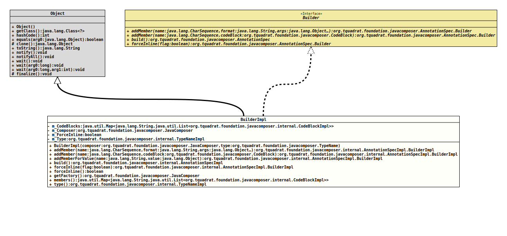

Class AnnotationSpecImpl.BuilderImpl
java.lang.Object
org.tquadrat.foundation.javacomposer.internal.AnnotationSpecImpl.BuilderImpl
- All Implemented Interfaces:
AnnotationSpec.Builder
- Enclosing class:
AnnotationSpecImpl
@ClassVersion(sourceVersion="$Id: AnnotationSpecImpl.java 1105 2024-02-28 12:58:46Z tquadrat $")
@API(status=INTERNAL,
since="0.0.5")
public static final class AnnotationSpecImpl.BuilderImpl
extends Object
implements AnnotationSpec.Builder
The implementation of
AnnotationSpec.Builder
for a builder of an
AnnotationSpecImpl
instance.- Author:
- Square,Inc.
- Modified by:
- Thomas Thrien (thomas.thrien@tquadrat.org)
- Version:
- $Id: AnnotationSpecImpl.java 1105 2024-02-28 12:58:46Z tquadrat $
- Since:
- 0.0.5
- UML Diagram
-

UML Diagram for "org.tquadrat.foundation.javacomposer.internal.AnnotationSpecImpl.BuilderImpl"
{kind=link}
-
Field Summary
FieldsModifier and TypeFieldDescriptionprivate final Map<String, List<CodeBlockImpl>> The building blocks.private final JavaComposerThe reference to the factory.private booleanA flag that indicates whether the inline representation is forced for this annotation.private final TypeNameImplThe name of the annotation type to build. -
Constructor Summary
ConstructorsConstructorDescriptionBuilderImpl(JavaComposer composer, TypeName type) Creates a newBuilderImplinstance. -
Method Summary
Modifier and TypeMethodDescriptionaddMember(CharSequence name, String format, Object... args) Adds a building block.addMember(CharSequence name, CodeBlock codeBlock) Adds a building block.addMemberForValue(String name, Object value) Delegates toaddMember(CharSequence,String,Object...), with parameterformatdepending on the givenvalueobject.final AnnotationSpecImplbuild()Creates theAnnotationSpecinstance from the added members.final booleanReturns the flag that indicates whether this annotation is presented inline or multiline.forceInline(boolean flag) Sets a flag that forces the inline presentation of the annotation.
Inline:final JavaComposerReturns theJavaComposerfactory.final Map<String, List<CodeBlockImpl>> members()Returns the members.final TypeNameImpltype()Returns the type of the annotation.
-
Field Details
-
m_CodeBlocks
The building blocks. -
m_Composer
The reference to the factory. -
m_ForceInline
A flag that indicates whether the inline representation is forced for this annotation.- See Also:
-
m_Type
The name of the annotation type to build.
-
-
Constructor Details
-
BuilderImpl
Creates a newBuilderImplinstance.- Parameters:
composer- The reference to the factory that created this builder instance.type- The name of the annotation type to build.
-
-
Method Details
-
addMember
public final AnnotationSpecImpl.BuilderImpl addMember(CharSequence name, String format, Object... args) Adds a building block.- Specified by:
addMemberin interfaceAnnotationSpec.Builder- Parameters:
name- The name.format- The format for theCodeBlock.args- The arguments for theCodeBlock.- Returns:
- This
Builderinstance. - See Also:
-
addMember
Adds a building block.- Specified by:
addMemberin interfaceAnnotationSpec.Builder- Parameters:
name- The name.codeBlock- TheCodeBlockrepresenting the new member.- Returns:
- This
Builderinstance.
-
addMemberForValue
Delegates toaddMember(CharSequence,String,Object...), with parameterformatdepending on the givenvalueobject. Falls back to"$L"literal format if the class of the givenvalueobject is not supported.- Parameters:
name- The name for the new member.value- The value for the new member.- Returns:
- This
Builderinstance.
-
build
Creates theAnnotationSpecinstance from the added members.- Specified by:
buildin interfaceAnnotationSpec.Builder- Returns:
- The built instance.
-
forceInline
Sets a flag that forces the inline presentation of the annotation.
Inline:
Not inline:@Column(name = "updated_at", nullable = false)@Column( name = "updated_at", nullable = false )- Specified by:
forceInlinein interfaceAnnotationSpec.Builder- Parameters:
flag-truefor the forced inline presentation,falsefor the multi-line presentation.- Returns:
- This
Builderinstance.
-
forceInline
Returns the flag that indicates whether this annotation is presented inline or multiline.- Returns:
truefor the inline presentation,falsefor multi-line.
-
getFactory
Returns theJavaComposerfactory.- Returns:
- The reference to the factory.
-
members
Returns the members.- Returns:
- The members.
-
type
Returns the type of the annotation.- Returns:
- The type.
-